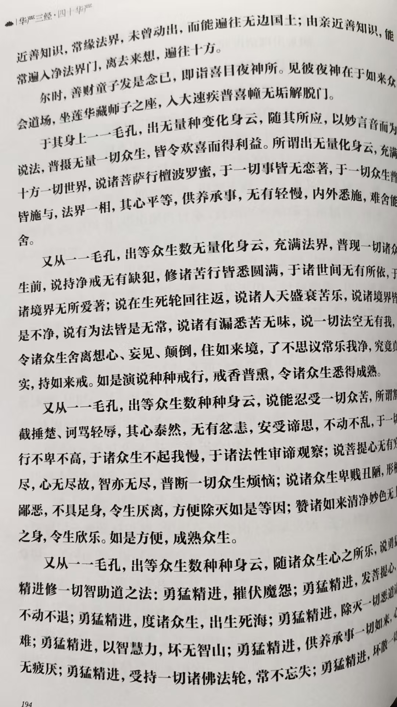
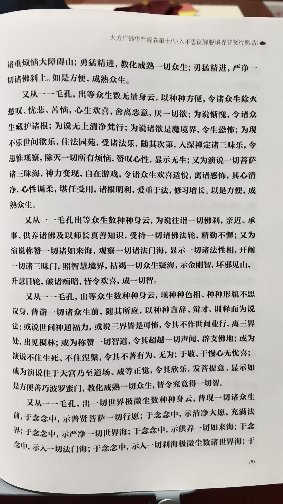
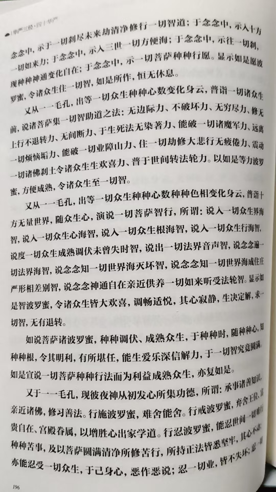

20260816修到一一毛孔，都有一个金身我佛 放大光明，照耀三千大千世界
原始对话记录观世音菩萨也没明确指点菩萨行菩萨道
夜神说明白了



用四页，说从一一毛孔出身云
也验证了我讲的没错
修到一一毛孔，都有一个金身我佛
放大光明，照耀三千大千世界
经里有我教学的证据
我修的没错，讲的也没错
经里讲的更细致
菩萨行，菩萨道
已经没有自己了，只有利益大众
自己的业也消完了
没有烦恼
只有利益大众心
以下为编者整理的主题文章
编者整理 · 主题文章
华严经"一一毛孔出身云"与毛孔放光之想
一句话结论：本页记录读《华严经》，见"从一一毛孔出身云"，与自己所说"修到一一毛孔都有一个金身我佛，放大光明照耀三千大千世界"相印证，并说经里把"菩萨行、菩萨道"讲得更细致——已无自己，只有利益大众。
一、本页在讲什么
本页是一段读经印证：记录者读到《华严经》"用四页，说从一一毛孔出身云"，认为"验证了我讲的没错"，进而重申"修到一一毛孔，都有一个金身我佛，放大光明，照耀三千大千世界"，并说经里把"菩萨行、菩萨道"讲得更细。
二、"一一毛孔"在经中
《华严经》大量使用"一一毛孔""一一尘中"这类句式，如"一一毛孔所有刹，佛悉于中坐道场"（见本集群同名篇）。其义在"一即一切"：极小的毛孔，能容无量佛刹、出无量化佛与光明。经中同类句式极多，如"一一尘中""一一心中"等。
三、放光与"三千大千世界"
"放大光明，照耀三千大千世界"是佛经常见意象。三千大千世界是佛教的宇宙单位，指以须弥山为中心、层层千倍展开的广大世界。光"遍照"表达的，是智慧与慈悲的周遍。"三千大千世界"也常用以形容范围广大，未必指具体数字。
四、观世音、夜神与善财
记录提到"观世音菩萨也没明确指点菩萨行菩萨道，夜神说明白了"。在《华严经·入法界品》里，善财参访的善知识中既有观自在（观音），也有夜神等，各以本门开示"菩萨行"。
五、"菩萨行、菩萨道"是什么
记录者给出的定义是："已经没有自己了，只有利益大众；自己的业也消完了，没有烦恼，只有利益大众心。"这契合大乘无我利他、悲智双运的宗旨。可对读本集群《菩萨无尽福德庄严藏解脱门》。记录者感叹经里"讲得更细"，正是把义理落到观想次第上的意思。
六、常见问题
问：毛孔真能"出佛、放光"吗？ 这是经典里的象征笔法，用于表达"一多相即"的境界，不是生理描述。
问：这算"神通"吗？ 本站相关内容按修学观想与经义整理，不承诺任何神通或现实功效。
七、提醒
- 本页是读经印证式记录，属个人修学角度；
- "放光"意象宜作义理与观想理解；
- 观想属个人体验，请勿据此宣称效验；
- 请以正规华严经本与注疏为准。
说明与免责：本站为民间修炼、民俗文化与传统文化资料的整理与记录，内容源自传承者口传与个人修习体会，仅供文化交流与研究参考，不构成医疗、健康、投资或任何功效承诺。所述内容属传统术数范畴，请理性看待；如身体不适，请及时就医。请遵守法律法规与公序良俗。